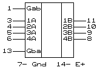

ИП6 = (242) - четыре инверсных двунаправленных драйвера
ИП7 = (243) - четыре неинверсных двунаправленных драйвера

ИП6 = (242) - четыре инверсных двунаправленных драйвера. Условное графическое обозначение
Параметры приведены для 54LS242/ 74LS242, 54LS243/ 74LS243, AM54 S242/AM74S242, AM54S243/AM74S243.
ИП6 и ИП7 могут передавать данные с шины A на шину B или с шины B на шину A в прямом (ИП7) или инверсном (ИП6) виде или быть отключены от обоих шин.Приемники обоих схем имеют на входе триггеры Шмитта с гистерезисом 0.2 - 0.4 В.
Таблица функционирования ИП6
Входы
Выходы
Gab
Gba
A
B
H
H
O
I
L
H
*
*
H
L
Отключено
L
L
I
O
Таблица функционирования ИП7
Входы
Выходы
Gab
Gba
A
B
H
H
O
I
L
H
*
*
H
L
Отключено
L
L
I
O
Электрические параметры
Параметры
54LS/74LS 533,555
54S/74S 530,531
74ALS (1533)
74AS (1530)
54F/74F (1531)
Выходной ток лог.0, мА
12/24
48/64
12/15
12/15
12/15
Выходной ток лог.1, мА
12/15
12/15
12/24
48/64
48/64
Входной ток лог.0 для Gi, мкА
200
2000
100
500
1600
Входной ток лог.0, мкА
200
400
100
1000
1600
Входной ток лог.1, мкА
20
50
20
50
70
Выходное напр. лог.0 при токе 24 мА, В
.35-0.5
.35-0.5
Выходное напр. лог.0 при токе 48 мА, В
0.55
0.55
0.5/
Выходное напр. лог.0 при токе 64 мА, В
0.55
0.55
/0.5
Выходное напр. лог.1 при токе 3 мА, В
2.4-3.4
2.4-3.4
2.4-3.2
2.4-3.4
Выходное напр. лог.1 при токе 12 мА, В
2
2
2
2.4
2.0
Ток короткого замыкания мА
40-225
50-225
30-112
50-150
100-225
Ток потребления, выходы H, ИП6 мА
22-38
80-135
10-16
18-28
22-35
Ток потребления, выходы H, ИП7 мА
22-38
95-160
15-25
28-44
64-80
Ток потребления, выходы L, ИП6 мА
29-50
100-150
14-21
38-60
40-55
Ток потребления, выходы L, ИП7 мА
29-50
120-180
20-30
47-74
64-90
Ток потребления, выходы Z, ИП6 мА
29-50
100-150
15-22
25-39
32-45
Ток потребления, выходы Z, ИП7 мА
32-54
120-180
21-32
35-56
71-90
Задержки распространения (нс)
Задержки, нс
LS242
LS243
S242
S243
ALS242
ALS243
AS242
AS243
F242
F243
555ИП6
555ИП7
531ИП6
531ИП7
1533ИП6
1533ИП7
1530ИП6
1530ИП7
1531ИП6
1531ИП7
Вых.= L→H
9-14
12-18
4.5-7
6-9
11
11
6.5
7.5
4.5-6.5
4.0-5.2
Вых.= H→L
12-18
12-18
4.5-7
6-9
10
11
5.7
6.5
3.0-4.5
4.0-5.2
Вых.= Z→L
20-30
20-30
10-15
10-15
18
20
6
11
6.0-7.5
4.5-5.7
Вых.= Z→H
15-23
15-23
6.5-10
8-12
21
20
8
8.5
6.5-9.0
5.0-7.5
Вых.= L→Z
15-25
15-25
10-15
10-15
14
14
7
7
7.0-9.0
4.0-6.0
Вых.= H→Z
10-18
10-18
6-9
6-9
22
22
11
11
6.0-9.5
4.5-6.0